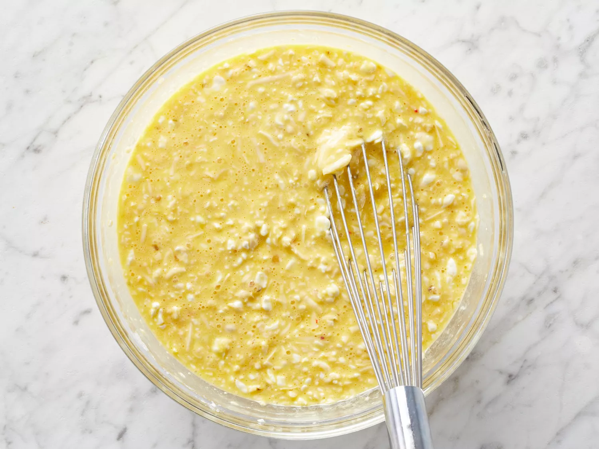
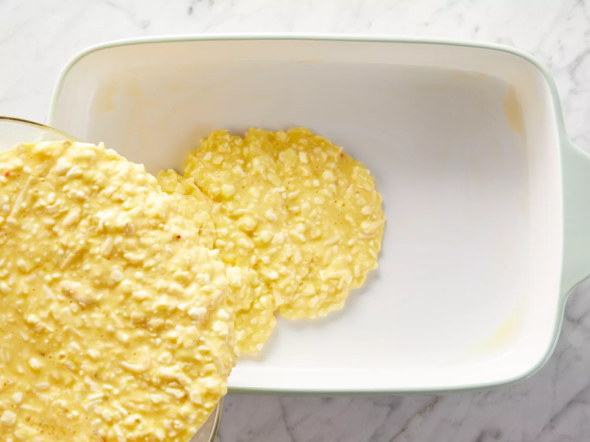
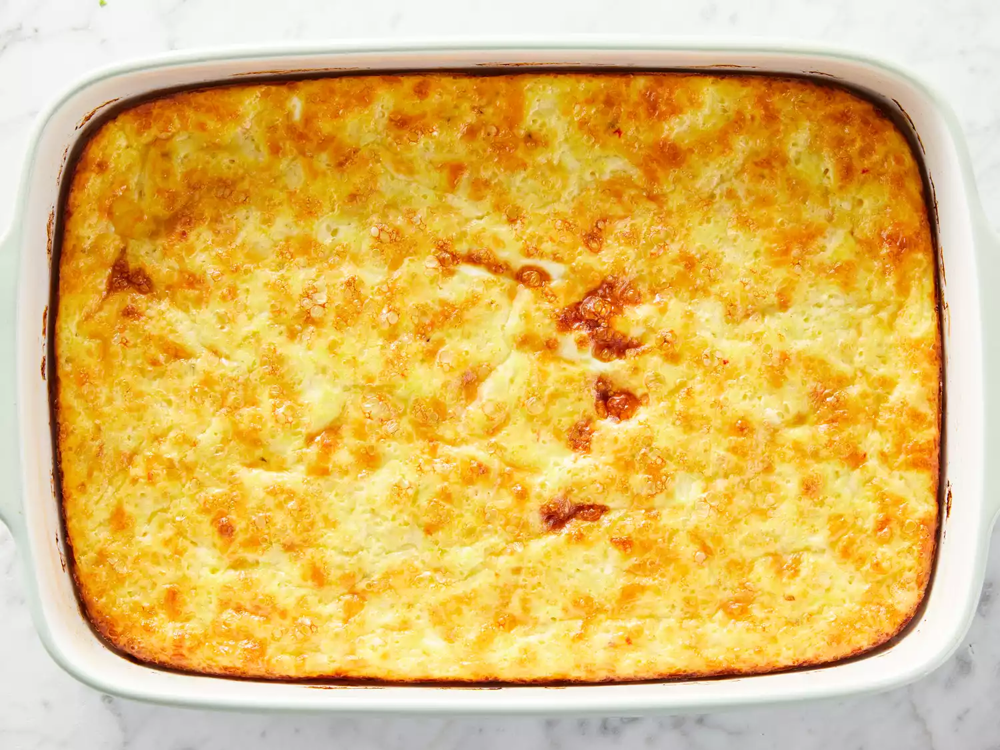

This basically is eggs, on top of cheese, on top of cheese, on top of eggs – making a delicious concoction of eggs, cheese, and flour.
To add a little extra kick, add a small can of diced chiles or jalapenos into the mix. Serve with sour cream, salsa, and green taco sauce.
Preheat oven to 350 degrees F(175 degrees C). Prepare a 9x13-inch baking dish with melted butter.
Whisk together the eggs, pepper Jack cheese, cottage cheese, flour, and salt in a large bowl.

Pour the mixture into the prepared baking dish.

Bake in the preheated oven until eggs are completely set, about 1 hour.

Enjoy your meal!